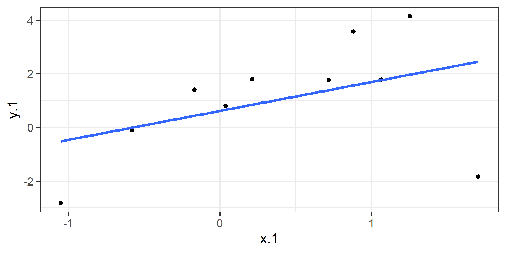
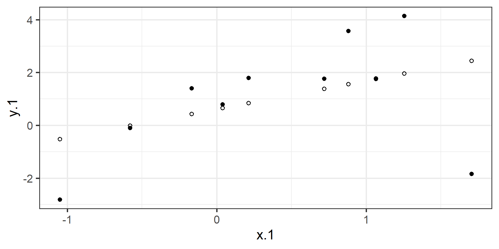
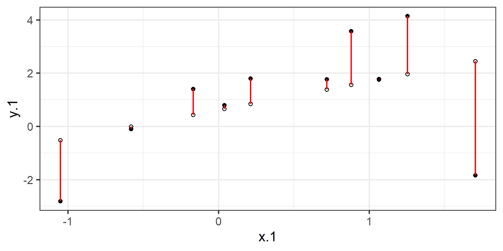
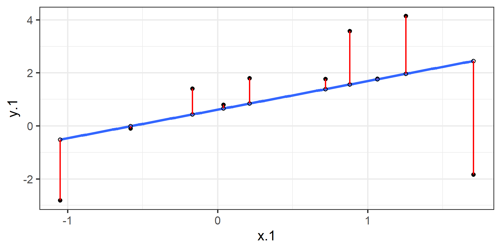
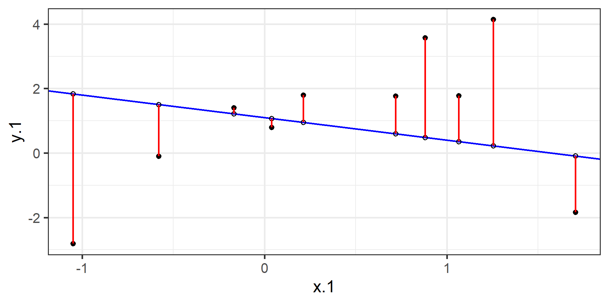
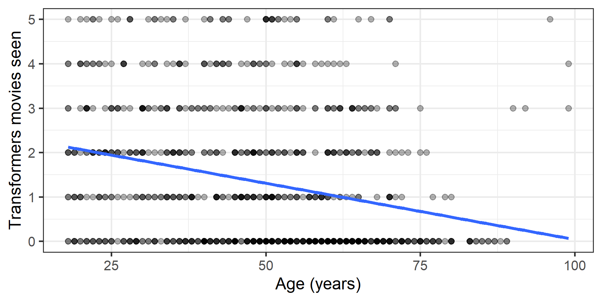
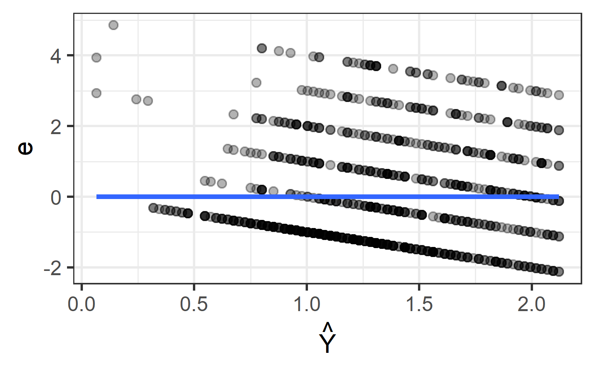
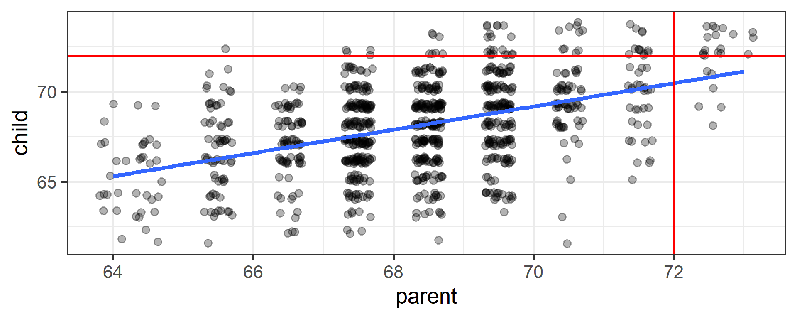

Week 05: Simple Regression
Date: September 24, 2026
Today…
The Linear Model — one machine, most of the course
- Why a line? (and why regression first)
- Data = Model + Error
- Where the intercept and slope come from
- Reading a slope out loud
- How well does the line fit? (\(R^2\), effect size)
- The punchline from Lab 5
First, a confession about Lab 5
In Lab 5 you ran three things:
- A t-test comparing two groups
- A correlation between two continuous variables
- An
lm()— the “sneak peek” 👀
And the numbers came back the same.
That was not a bug, and it was not a coincidence.
Important
Regression is not a new test that sits next to t-tests and correlations. It is the general machine that both of them are special cases of.
Why I teach regression first
Regression is a general data analytic system
Lots of things fall under the umbrella of regression
It handles many forms of relations and types of variables
The output gives you effect sizes and statistical significance
We can add multiple predictors and account for their intercorrelations
Learn one machine well, then add parts to it. That is the whole plan for the next eight weeks.
Uses for regression
Adjustment: Take into account (control) known effects in a relationship
Prediction: Develop a model based on what has happened previously to predict what will happen in the future
Explanation: Examine the influence of one or more variables on some outcome
Part 1: Building the Line
The core idea
With regression, we are building a model that we think best represents the data, and the broader world
\[ Data = Model + error \]
Every model we build for the rest of the semester is a variation on this sentence.
A line you already know
At the simplest form we draw a line to characterize the linear relationship between two variables, so that for any value of x we have an estimate of y
\[ Y = mX + b \]
Y = Outcome Variable (DV)
m = Slope Term
X = Predictor (IV)
b = Intercept
Let’s “science up” the equation
\[ Y_i = b_0 + b_1X_i + e_i \]
This captures how we calculate each observation ( \(Y_i\) )
\[ \hat{Y_i} = b_0 + b_1X_i \]
This gives the “best guess” or expected value of \(Y\) given \(X\)
Expected vs. Actual
\[Y_i = b_{0} + b_{1}X_i + e_i \qquad \hat{Y_i} = b_{0} + b_{1}X_i\]
\(\hat{Y}\) signifies the fitted score — no error. We interpret it as “on average.”
The difference between the fitted and the observed score is the residual:
\[Y_i - \hat{Y_i} = e_i\]
Note
There is a different \(e\) value for each observation in the dataset. The residual is the part of a person your model gets wrong — hold onto that, it becomes the whole story in a few weeks.
OLS
How do we find the regression estimates?
Ordinary Least Squares estimation
Minimizes deviations
- \[ min\sum(Y_{i} - \hat{Y} ) ^{2} \]
Other estimation procedures are possible (and necessary in some cases)
Some data

The fitted values ( \(\hat{Y}\) )

The residuals ( \(e_i\) )

Put it together

Compare to a bad fit


OLS
The line that yields the smallest sum of squared deviations
\[\Sigma(Y_i - \hat{Y_i})^2\] \[= \Sigma(Y_i - (b_0+b_{1}X_i))^2\] \[= \Sigma(e_i)^2\]
You could try many different coefficients until you find the pair with the smallest sum of squared deviations. Luckily, there are simple calculations that yield the OLS solution every time.
Where does the slope come from? 🤔
Starting with the covariance between two variables:
\[cov_{xy} = \frac{\sum(x-\bar{x})(y-\bar{y})}{N-1}\]
and the correlation, which is just a standardized covariance:
\[r_{xy} = \frac{cov_{xy}}{s_x s_y}\]
The regression coefficient is built from exactly the same pieces.
Regression coefficient, \(b_{1}\)
\[b_{1} = \frac{cov_{XY}}{s_{x}^{2}} = r_{xy} \frac{s_{y}}{s_{x}}\]
What units is the regression coefficient in?
The slope equals the estimated change in Y for a 1-unit change in X
Tip
A correlation is unitless. A slope is in the units of your study. That is why a slope is often the more useful number to report to a human being.
Slope is the correlation (rescaled)
\[\Large b_{1} = r_{xy} \frac{s_{y}}{s_{x}}\]
If the standard deviation of both X and Y is equal to 1:
\[\Large b_1 = r_{xy} \frac{s_{y}}{s_{x}} = r_{xy} \frac{1}{1} = r_{xy} = \beta_{yx}\]
Standardize both variables and the slope becomes the correlation. Same information, different clothes.
Estimating the intercept, \(b_0\)
- The intercept adjusts for differences in the means of X and Y
\[\hat{Y_i} = \bar{Y} + r_{xy} \frac{s_{y}}{s_{x}}(X_i-\bar{X})\]
It is where the regression line crosses the y-axis, at \(X = 0\)
It ensures the line runs through the point \((\bar{X}, \bar{Y})\)
\[\Large b_0 = \bar{Y} - b_1\bar{X}\]
🔍 Visualizing OLS
Play with these — they make the “least squares” part click:
https://setosa.io/ev/ordinary-least-squares-regression/
https://observablehq.com/@yizhe-ang/interactive-visualization-of-linear-regression
Part 2: Reading a Line Out Loud
Our data today 🃏
Cards Against Humanity: Pulse of the Nation — a national poll that asked serious demographic questions and some very strange ones.
Step 1: ALWAYS visualize first

By hand, then by R
r b1 b0
-0.26644722 -0.02498682 2.56823762 In R
Call:
lm(formula = transformers ~ age, data = cah)
Residuals:
Min 1Q Median 3Q Max
-2.1206 -1.1055 -0.5472 0.9784 4.8588
Coefficients:
Estimate Std. Error t value Pr(>|t|)
(Intercept) 2.57733 0.15503 16.625 <0.0000000000000002 ***
age -0.02538 0.00300 -8.457 <0.0000000000000002 ***
---
Signif. codes: 0 '***' 0.001 '**' 0.01 '*' 0.05 '.' 0.1 ' ' 1
Residual standard error: 1.504 on 936 degrees of freedom
(62 observations deleted due to missingness)
Multiple R-squared: 0.07099, Adjusted R-squared: 0.07
F-statistic: 71.53 on 1 and 936 DF, p-value: < 0.00000000000000022Saying the slope out loud
\[\widehat{transformers} = 2.58 - 0.025(age)\]
“Each additional year of age is associated with 0.025 fewer Transformers movies seen.”
That sounds like nothing. So rescale it to a unit people care about:
- 10 years → about 0.25 fewer movies
- 40 years → about one whole movie fewer
Note the word associated. Nobody was randomly assigned an age.
And the intercept?
\(b_0 = 2.58\) = the predicted number of Transformers movies for a person aged zero.
Careful
Nobody in this sample is under 18. A prediction at age 0 is extrapolation — the model has never seen data anywhere near there.
The intercept is an anchor for the line, not a finding.
When zero is not meaningful, centering the predictor fixes the interpretation (we will do this for real in Week 9).
Predict a person
A 20-year-old in the data who has seen 4 movies:
\[e_i = Y_i - \hat{Y_i} = 4 - 2.07 = +1.93\]
Positive residual → above the line → the model under-predicted this person.
🛠️ Activity Stop 1: One Line, Two Stories
Tip
Part A: Follow along · ~20 min · Pairs
We fit this model together, from the top:
- Plot it, then guess r before you run it
lm(), find the intercept and slope- Say the slope in a unit that means something
- Predict a person and compute their residual
☕ Break
10 minutes
When we come back: how do we know if this line is any good?
Part 3: How Well Does the Line Fit?
Statistical inference
The way the world is = our model + error
How good is our model? Does it “fit” the data well?
To assess fit, we examine the proportion of variance in our outcome that is “explained” by our model.
To do that, we partition the variance into two categories: variability captured by the model, and variability that is not.
Partitioning variation
Start with the relationship between observed \(Y\) and fitted \(\hat{Y}\):
\[Y_i = \hat{Y}_i + e_i\]
Variances are additive when two variables are independent. If C = A + B, then the variance of C is the sum of the variances of A and B.
Why can we use that rule here?
Partitioning variation
\(\hat{Y}_i\) and \(e_i\) are independent of each other. So the variance of \(Y\) equals the variance of \(\hat{Y}\) plus the variance of \(e\).
\[\large s^2_Y = s^2_{\hat{Y}} + s^2_{e}\]
Variances are sums of squares divided by N−1, and all have the same sample size here, so:
\[\large SS_Y = SS_{\hat{Y}} + SS_{\text{e}}\]
\[ SS_Y = SS_{\text{Model}} + SS_{\text{Residual}}\]
Coefficient of Determination
\[\Large \frac{SS_{Model}}{SS_{Y}} = \frac{s_{Model}^2}{s_{y}^2} = R^2\]
\(R^2\) is the proportion of variance in Y explained by the model
\[\large \sqrt{R^2} = r_{Y\hat{Y}}\]
With one predictor, that is just our old friend \(r\).
Ta da! 🎉
[1] 0.07099412[1] 0.07099412Significance \(\neq\) importance
The \(p\)-value tells us the effect is likely not zero. It says nothing about whether the effect is large or meaningful.
Important
With a large enough sample, a tiny, trivial effect becomes statistically significant. Our n here is 938.
Statistical Significance \(\neq\) Practical Significance
Effect size for a regression
The slope itself — in the units of your study. The most concrete thing you have.
Standardized slope / \(r\) — Cohen’s rough guide: small (|.10|), medium (|.30|), large (|.50|)
Coefficient of determination \(R^2\) — proportion of variance accounted for
For our model: \(r = -.27\), so \(R^2 = .071\)
“Approximately 7% of the variability in Transformers movies seen is accounted for by age.”
Writing it up
Template: b = slope, t(df) = statistic, p = p-value, plus \(R^2\)
Age significantly predicted the number of Transformers movies a respondent had seen, b = −0.03, t(936) = −8.46, p < .001. Each additional decade of age was associated with about a quarter of a movie fewer, and age accounted for 7.1% of the variance in movies seen (\(R^2\) = .07).
Tip
Notice what the good version includes: the estimate in real units, the test, and a statement of how much it matters. All three.
Pretty tables with sjPlot
Data, fitted, and residuals
# A tibble: 6 × 9
.rownames transformers age .fitted .resid .hat .sigma .cooksd .std.resid
<chr> <int> <int> <dbl> <dbl> <dbl> <dbl> <dbl> <dbl>
1 1 1 64 0.953 0.0467 0.00196 1.50 9.51e-7 0.0311
2 2 0 56 1.16 -1.16 0.00126 1.50 3.74e-4 -0.769
3 3 0 63 0.979 -0.979 0.00185 1.50 3.92e-4 -0.651
4 4 0 48 1.36 -1.36 0.00107 1.50 4.38e-4 -0.904
5 5 1 32 1.77 -0.765 0.00222 1.50 2.88e-4 -0.509
6 6 0 64 0.953 -0.953 0.00196 1.50 3.95e-4 -0.635 The relationship between \(\hat{Y_i}\) and \(e_i\)

Flat. Always. By construction — and in Week 10 we will use that fact to catch models that are lying to us.
Part 4: The Lab 5 Punchline
A t-test is a regression
Two Sample t-test
data: transformers by gender
t = -2.2886, df = 911, p-value = 0.02233
alternative hypothesis: true difference in means between group Female and group Male is not equal to 0
95 percent confidence interval:
-0.4348223 -0.0333445
sample estimates:
mean in group Female mean in group Male
1.206897 1.440980 The same question as a line
# A tibble: 2 × 5
term estimate std.error statistic p.value
<chr> <dbl> <dbl> <dbl> <dbl>
1 (Intercept) 1.21 0.0717 16.8 1.59e-55
2 genderMale 0.234 0.102 2.29 2.23e- 2- The intercept (1.21) is the mean of the first group (Female)
- The slope (0.23) is the difference between the means
- Same t. Same p. One machine.
Why this matters
Note
You do not have to memorize a separate procedure for every design.
outcome ~ predictor handles the continuous case and the group case. Over the next few weeks we just add more predictors to the same machine.
Next week: groups as regression, in full — t-tests and ANOVA as lm().
One more thing: regression to the mean
An observation about heights motivated the development of regression: if you selected an exceptionally tall (or short) parent, their child was almost always less extreme.
Code
library(psychTools)
heights <- psychTools::galton
mod <- lm(child ~ parent, data = heights)
heights <- broom::augment(mod)
heights %>%
ggplot(aes(x = parent, y = child)) +
geom_jitter(alpha = .3) +
geom_smooth(method = "lm", se = FALSE) +
geom_hline(aes(yintercept = 72), color = "red") +
geom_vline(aes(xintercept = 72), color = "red") +
theme_bw(base_size = 20)
Regression to the mean
Regression to the mean: a random variable that produces an extreme score on a first measurement tends to produce a less extreme score on a second measurement.
Warning
This is a threat to internal validity whenever an intervention is assigned based on first-measurement scores.
Tutoring the students who bombed the midterm? They would have improved somewhat anyway.
🛠️ Activity Stop 2: Parts B & C
Tip
One Line, Two Stories · ~35 min · Pairs
Part B (~25 min): Do older people read more books?
- You will get p = .027 — and then one person who reported reading 1,000 books will make it disappear
- The p-value flips on a judgment call you make
Part C (~10 min): The t-test / regression equivalence, in your own file
✍️ Wrap-Up
Finish these at the bottom of your activity file:
- A slope, stated in the units of a study, without using the word “slope.”
- One intercept from today that is meaningless, and why.
- One thing that is still muddy → put it in your journal this week.
For next time
📋 Lab 6 — Reading the Line
- Almost no coding. I give you the output; you tell me what it means.
- Uses the Lab 5 data plus a new context
📖 Chapter 15 — ST
Schedule change
The lab schedule has moved up from the PDF syllabus. Website = current version.